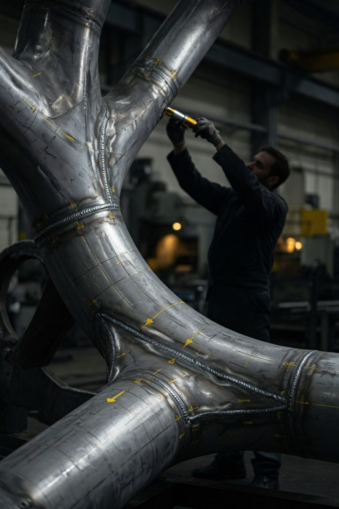
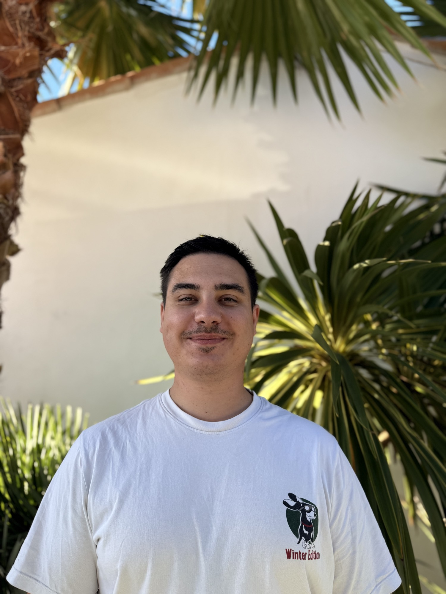

Autonomous Robotic
Inspection Systems
We build modular, vendor-agnostic robotic platforms that combine advanced ultrasonics, precise 6-axis motion and intelligent data workflows to deliver repeatable, fully traceable NDT on complex industrial components.
Why NDT automation is critical: too manual, too variable, too hard to scale on complex geometries

High operator dependency
Inspection quality still varies significantly between operators. Complex geometries make consistent probe orientation and coupling extremely difficult to repeat.
Cost, time & scalability
Long inspection cycles, production downtime, and a growing shortage of qualified Level 2/3 experts create bottlenecks for critical assets.
Traceability & audit burden
Manual documentation is slow, error-prone and often disconnected from the actual inspection data and robot path.
Safety & access constraints
Many high-value inspections occur in confined, radiological or hazardous environments where manual execution carries high HSE cost.
Modular, vendor-agnostic robotic inspection platform for automated NDT
We integrate the best available hardware and software into coherent, repeatable inspection workflows — without locking customers into a single robot or sensor brand.
Robotics & Trajectory
6-axis robots with intelligent surface following, automatic TCP calibration, and precise, repeatable paths even on complex curved or welded geometries.
Advanced NDT Integration
UT, PAUT, TFM/ATFM with stable coupling and full synchronization between robot position and ultrasonic data acquisition. Hardware-agnostic by design.
Software & Data Layer
Digital inspection workflows, real-time robot–NDT synchronization, automated reporting and complete traceability from geometry to final report.
The robot in action.
Early tests with the Fairino FR5 — first trajectory and tool positioning on a representative test part. NDT-integrated demos coming next.
Building credibility through targeted technical conversations.
We are in active technical discussions with leading players in advanced ultrasonics, robot control systems, and high-value industrial sectors. Our priority is to convert this interest into demonstrable prototypes and first paid Proofs of Concept.
Active discussions with providers of advanced ultrasonic systems (PAUT, TFM/ATFM) for integration into robotic workflows.
Exploratory work on real-time robot control, multi-brand trajectory generation and low-level synchronization.
Early technical interest from organizations seeking advanced, traceable inspection methods for complex critical components.
Ongoing outreach to companies operating high-value assets that require frequent, high-quality, documented inspections.
Built by someone who has lived the problem on the shop floor.
Robinspect is not a robotics idea applied to NDT from the outside. It comes from direct experience with the real constraints of advanced ultrasonic inspection in demanding industrial environments.

Clear, focused 24-month roadmap.
Let’s discuss your inspection challenge.
Whether you are an industrial end-user, technology partner, or investor evaluating the opportunity — I’m happy to talk.